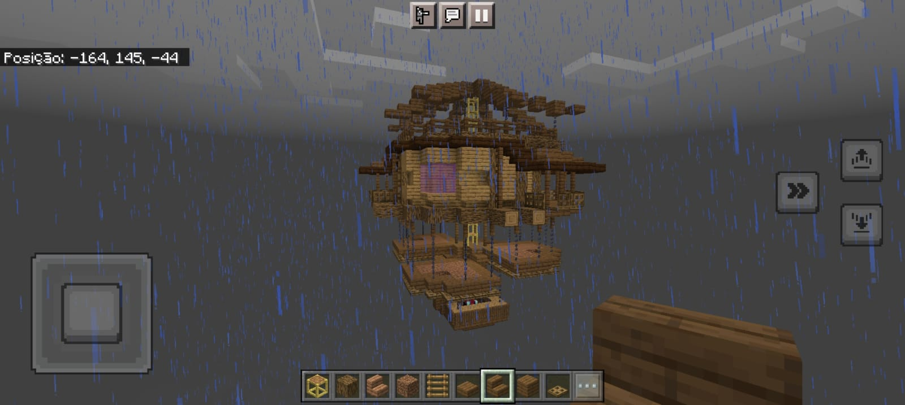
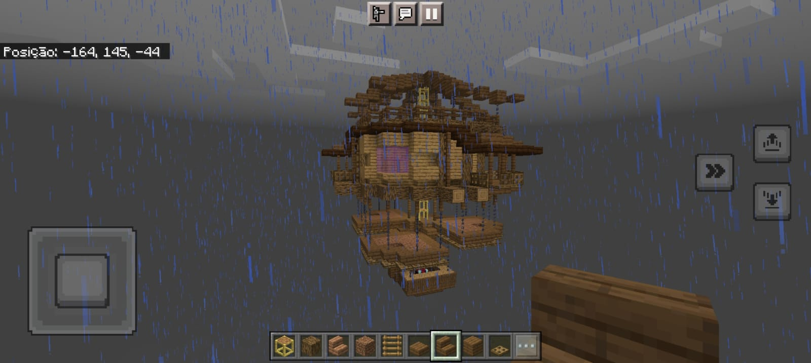
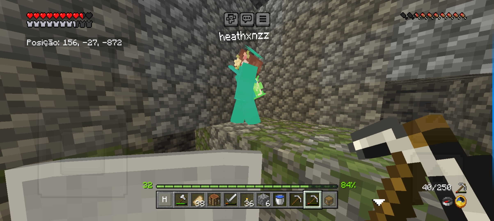
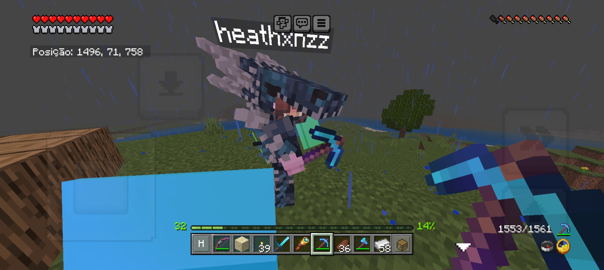
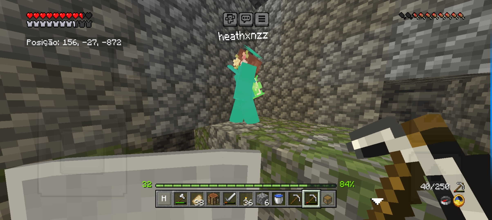
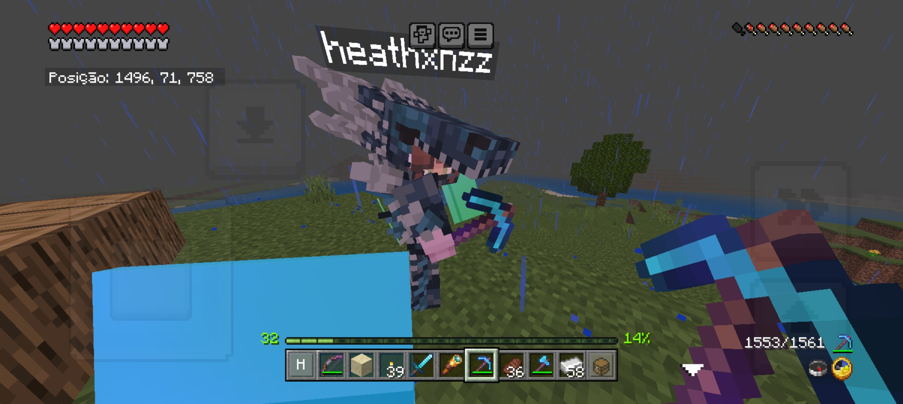

Mural de momentos
Aniversário passado

 



Codzinho


Minecraft (Primeiro Server Nosso)


 





Minecraft (Segundo Server Nosso)


The Rake


Backrooms


Roblox


Captivity


Stardew Valley

Eclipse


Bolinhos da Mylezinha


Metadinhas


Música: Kenga 1/4 descalça
Praga Linda da Peste
 Toca o dedinho aqui coisa mais linda!
Toca o dedinho aqui coisa mais linda!